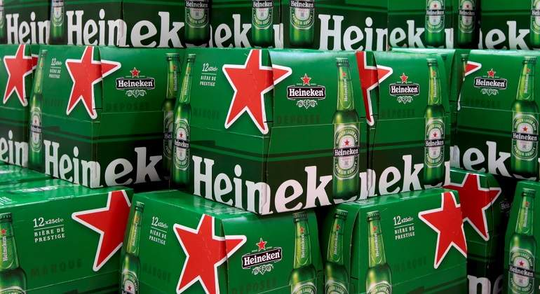

Caso Heineken. Cuando el producto no es lo más importante: un original proceso de selección de personal para difundir los valores de marca
En sus acciones publicitarias, Heineken sabe cómo aprovechar todo el potencial
que ofrece una perfecta gestión del ‘branding’, pero también cómo sacar el máximo partido a las redes sociales.
Estos dos conceptos, marca y redes, los aunó en 2013 en una innovadora y
original campaña de BTL con la que la compañía asumía un doble reto:
romper con las tradicionales entrevistas de trabajo para atraer talento a la
compañía y usar ese talento para apoyar su diferenciación corporativa. Con
‘El candidato’ y su ‘storytelling’, Heineken no solo consiguió un gran
‘engagement’ que le aportó una alta viralidad: demostró también que, con
altas dosis de creatividad, se puede persuadir al público de que algunas
empresas son algo más que un mero producto.

Su alto posicionamiento entre su target, pero también entre el
público general; su gran notoriedad de marca en muchos mercados, más allá
de su propia categoría de producto; y su poderosa imagen de marca
corporativa, gracias a una más que efectiva gestión de su branding, han
catapultado a Heineken a lo más alto. La conocida marca de cervezas ha
alcanzado el reconocimiento internacional de los consumidores gracias a una
estudiada y trabajada estrategia empresarial, de márketing y comunicación
que no deja indiferente a nadie. Unas estrategias que están íntimamente
ligadas a una filosofía centrada en unos valores muy concretos:
-
Exaltar la pasión y el disfrute de la vida. Respetar el planeta y a la
gente que vive en él.
-
Apostar por un equipo de profesionales diverso, internacional,
dinámico y comprometido.
-
Es este último punto uno de sus principales valores. Heineken
defiende que "las personas están en el corazón de la empresa", y, en
lo que respecta a la comunicación publicitaria, lo eleva a sus máximas
consecuencias.
Video publicitari
Audio publicitari